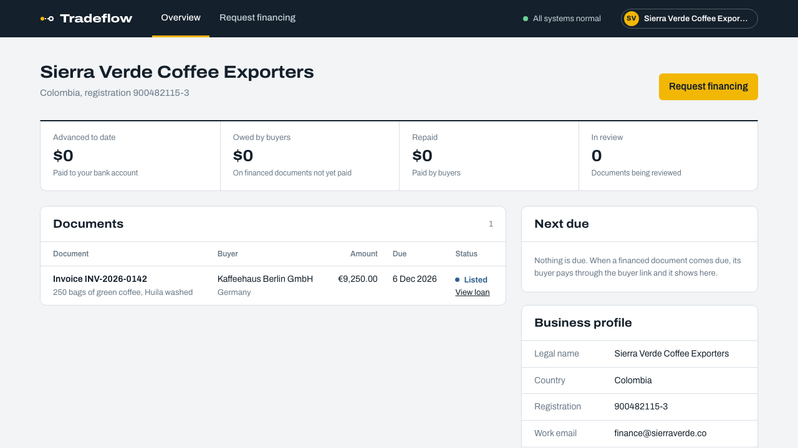

Tradeflow
Fund the goods already on their way.
Exporters get paid the day their goods ship. Investors fund them from a bank account or a wallet.

Maadhav Sharma, Founder & CEO, CodeDecodersTOKEN2049 Origins, Singapore
Exporters get paid the day their goods ship. Investors fund them from a bank account or a wallet.

Businesses: advances, amounts owed by buyers, documents.
Investors: positions, returns, payouts and the marketplace.

Funding paused: the bank booked money that never arrived.
github.com/Maadhav/tradeflow